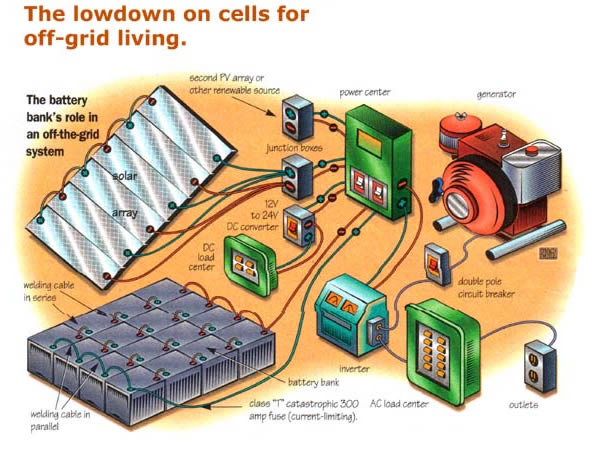
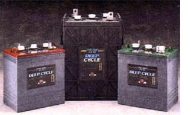
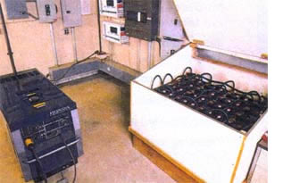

A properly sized, well functioning battery bank is the heart of any off-grid electrical system. It absolutely makes the difference between days filled with pleasant convenience and complete, ongoing frustration. Anyone who is considering going off-grid (and those already in the frying pan with inadequate systems) should become a battery aficionado long before buying the first (or next) piece of solar, wind, or hydroelectric equipment. Bad battery advice is easy to come by, and the dangers of misusing battery banks are very real. So let's get down to business.
The types of batteries used for off-grid system storage are called deep-cycle batteries. Don't be conned into trying auto motive batteries for this application (one of the most common bits of bad advice); they just aren't designed for it. If they were, solar catalog companies would sell you batteries rated in cold-cranking amps rather than amp/hours. The two most widely used types of deep-cycle batteries for home power systems are lead-acid (cheaper, more common) and nickel cadmium. These have two very different personalities, which you should consider before choosing what's right for you.
But before talking about each, there is a rule pertaining to both that should be followed: never mix and match batteries.
In fact, never even mix and match same type cells of different ages. The optimum situation is to buy all new cells at one time, use them for their lifetime, and then replace the whole set. If you come across used batteries, always get the exact same cells for the entire bank, and try to get ones that have already been together or, at the very least, have had similar usage. This rule has to do with the voltage of each cell within each battery running consistently as close to all the rest as possible. When an imbalance in voltage occurs, some cells stay topped out or receive too much voltage, while others never fill.
When considering lead-acids, remember that they are temperature-sensitive. A lead-acid cell has half the capacity at 25°F that it has at 80°F The result is that the colder the bank gets, the quicker it will both charge and discharge. You'll want to take this into account to avoid working with half the power when the days are shortest.
The other difficulty with lead-acids is that they must always be kept in the upper tier of their voltage operating range; above 80% is recommended for maximum battery life. Cells drained below a certain voltage can suffer damage and may be ruined. For example, on a 12-volt system, full is generally considered 12.7 volts and, although occasionally dipping into the low twelves is considered acceptable, you should try to keep the voltage from dropping below about 12.5 volts. And the higher the voltage is maintained, the longer the life expectancy of the battery. This makes adequate sizing of a lead-acid battery bank absolutely essential for the preservation of your investment. Installing a volt meter in an obvious place in the house and investing in appliances that turn themselves off when the voltage begins to go critical can help, too.
The nickel-cadmium's are a different animal. While they aren't temperature sensitive, they are efficient than lead-acids and require more energy to charge. So just having ni-cads means losing a chunk of the electricity you produce, but, on the plus side, you can rely on an unchanging storage capacity regardless of temperature.
< Deep-cycle batteries from Trojan battery Company
Another difference is that voltage isn't a life-or-death factor with ni-cads. In fact, it is recommended that they be completely drained a couple of times a year. (If you buy new cells of either type, they must be cycled as many as 50 times to get up to running capacity).
A problem you may face with ni-cads is that much of the alternative energy equipment available is built only with the more popular lead-acids in mind. Specifically, ni-cads must be charged to a voltage that's higher than many inverters, chargers, and the like can handle.
Finally, the two types of batteries also act differently. The lead-acids charge with the voltage rising steadily and discharge similarly, with a steady voltage drop. Ni-cads charge with the voltage rising somewhat steadily, but once charged, they maintain a relatively high voltage during use until they begin to run low, at which time the voltage plunges.
Aside from choosing the type of battery most useful for your situation, you must also properly size the bank for your needs. An undersized bank will have you running constantly to the volt meter and will leave you frequently frustrated.
< A bank's enclosure should be ventilated and isolated from the home.
The first step to putting together a relatively effortless system is to get a realistic idea of your usage and storage needs. If you've been living off-grid with a bank of batteries that doesn't cut it, you'll already have a good idea of what you've got and how long you can run on it. If you are just preparing to take the plunge, you should start by estimating your general usage. Get this estimate by listing each appliance you rely on and how much you use it every day, on average. Then assign a number to each item reflecting either the amps or the watts it draws, which should be listed somewhere on the appliance.
The storage capacity of your bank will be rated in amp/hours, usually though not always-at a 20 amp/hour rating. (While I'll explain the basics of this here, be warned that it can be confusing. Ask a technician at any of the major suppliers to review with you anything that remains unclear.) Bank capacity refers to how many hours of storage are available at a specified, constant draw. For instance, if you have four floor-scrubber lead-acid batteries interconnected with an amp/hour rating of 370 each at the 20 amp/hour rating, then your bank is 1,480 amp/hours. To understand how much storage this is, take the rating (20 amp/hours) and divide it into the available storage (1,480), which gives you how many hours are available (74). In other words, if 20 amps are drawn continually from the bank, each hour amounts to 20 amp/hours drawn, and the bank above can handle this load for 74 hours.
The tricky part is figuring your general usage list in terms of amp/hour capacity. If you are running an inverter and the appliances on your list are rated at 120 volts, then the wattage and amp figures you've jotted down must be changed to the voltage of your battery system to jibe with your amp/hour rating. The formula is watts=volts x amps. If a hair dryer is rated at 1,200 watts at 120 volts, it will draw 10 amps (1,200 watts=120 volts x 10 amps). If you have a battery bank rated at 12 volts, then you must change this figure over to accommodate the voltage of your system: the wattage will remain the same, the voltage is changed, which in turn changes the amperage (1,200 watts=12 volts x 100 amps). So you know the load to run the hair dryer will be 100 amps, but anything run through an in inverter needs more energy than the device alone requires, because inverters have certain inefficiencies that are different for each unit. You'll need to either research the figure for your equipment, or else just understand that the total of your daily usage sheet will be a low figure if many of your appliances require inverted power. Also, the batteries themselves suffer from inefficiency. Adding 30% to your overall needs is the generally accepted rule when summing the total usage figure.
With photo-voltaic's and wind power, it's best to have a battery bank that stores enough current to supply your regular needs for a week. In most places, this will allow you to live at your regular pace through spells when conditions keep you from making power. Also, sizing a bank this way will assure that you have one large enough to maintain a high, stable voltage when starting and running large appliances. If you're lucky enough to have hydroelectric power, your storage needs may be smaller than those with solar or wind systems, since you get steady, reliable current production.
The most important thing you need to know about batteries is that they produce explosive gas when charging. Batteries should be kept in an enclosure completely isolated from anything else (even switches and breakers can spark when used and ignite the gas). This enclosure should be equipped with a vent that exits the box above the top of the batteries and travels
level and/or upwards to fresh air. It is not a good idea to put batteries in your house; instead, build them their own home away from yours. A small insulated structure for lead-acids works well in cooler regions. Placing the enclosed, vented box inside a heated building such as a shop or garage can also work very well in cold areas.
Interconnects between batteries should be beefy. A one-eighth-inch copper bus bar, or some similarly adequate material, can be bolted between terminals for this purpose. Be sure when making connections that contact surfaces are perfectly clean (a bit of sanding can clean up surfaces, if needed). Add some anti-oxidation compound to keep connections from crusting up during use. When making cable interconnects use a large copper cable (don't use aluminum. Most conditions will require at least 2/0 copper; if you get welding cable, it bends very nicely). Get professionally crimped lugs on the ends. It's not a bad idea to add solder, electrical heat/shrink wrap, and then electric tape over the whole thing. If you size your interconnects to your system's needs and properly build and install them, you will rarely run into a situation where they fail.
Finally, always fuse anything coming from or going to the battery bank with a properly sized fuse rated for DC usage. Also, I usually ground an entire off-grid system at one point to an eight-foot ground rod connected with 4/0 copper cable straight to the negative lug of the battery bank.
All battery banks occasionally need to be equalized. This is a process where the voltage on the system is run up higher than the normal "full" voltage (to 15 volts or higher on a 12-volt system, 30 for a 24volt). In a bank, cells that perform better continually will rise ahead of others that lag behind. Running the voltage up to excessive levels brings all the cells in the bank up to full, increasing their life span. It also mixes the electrolyte and reduces sulfation (see "Lead-Acid Dilemma").
The banks must be equalized every three months. The duration of this process differs among battery types and brands. Many chargers and charge controllers have a built in equalization mechanism, enabling you, with a simple push of a button, to raise the voltage to the numbers required by your system to complete this task. Disconnect any DC appliances during this process, as the high voltage may damage them.
It's also good to check each cell with a hand-held volt meter or hydrometer and note any cells with large differences from the rest. One bad cell can put a drain on the whole system and cause your storage to drop well below what you'd intended to have on hand.
Finally, as mentioned earlier, in the case of ni-cads, it's good to completely discharge them a couple of times a year. This helps avoid a strange chemical "memory," which can cause ni-cads to function improperly.
The major components of a lead-acid battery are the electrodes, the electrolyte, and the casing. The positive electrode (cathode) typically consists of pure lead dioxide, whereas the negative electrode (anode) consists of a grid of metallic lead containing various elemental additives, including antimony, arsenic, cadmium, copper, and tin. The average lead battery consists of 17% metallic lead, 50% lead sulfate/oxide, 24% acid, 5% plastics and 4% residuals.
Scientists have known for over 100 years that it was possible to produce electricity by simply combining oxygen and hydrogen in a chemical electrolyte. The combination process entailed neither combustion nor pollution, just electrical current ...with pure water as the only by-product! This miracle energy source could only take place, however, through extremely delicate membranes of metal such as platinum, and the process of constructing a fuel cell composed of many thousands of these meticulously organized membranes was predictably expensive. What the idea needed was an underwriter in both the public and private sectors, and over the past five years, the hydrogen cell has been provided with both. Honda, Daimler-Benz, as well as many smaller corporations have manufactured hydrogen cell vehicles, and Congress has approved over $100 million in research funds for future development. Both IBM and Dow Corning have launched ambitious plans to develop cell designs that are simpler, smaller in size, and less expensive. The potential for the hydrogen cell is so enormous that in less then 20 years, we could see a nationwide fleet of millions of city buses, trucks, vans, and cars running at unsurpassed efficiency on cheaply obtained fuel and with absolutely zero emissions, as well as a revolution in off-the-grid home electrical power. It just might be a brave new world after all!
Lead-acid batteries' biggest liabilities are their toxic components and limited useful life span: typically between six months to four years. The short life is due to internal deterioration of the lead plates, which constitute the electrodes for the battery. The World Battery Council estimates that 84% of lead-acid batteries are scrapped because of sulfation, or the accumulation on the plates of lead sulfate deposits, which occurs when a battery is discharged.
The deeper a battery is discharged, the greater the sulfation. And the greater the sulfation, the more diminished the battery's capacity to store electricity.
|
 Illustration by Scott Macneil |
 Courtesy of Trojan Battery |
 Tom Liden |